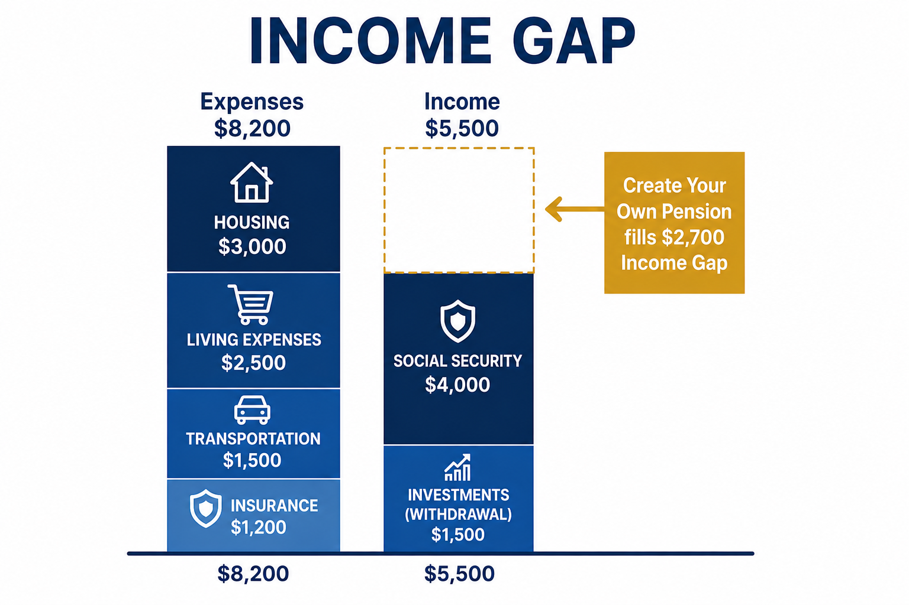

How We Create Your Pension
A straightforward explanation of how the strategy works, what it costs, and what you can expect.
It Starts With Your Income Gap
Before we talk about any solution we need to understand your specific situation. That starts with two numbers.
Your essential expenses. Housing, healthcare, food, and transportation. The bills that show up every month regardless of what the market does.
Your guaranteed income includes Social Security, any pension, and anything else that arrives on a predictable schedule regardless of market conditions. If you have not already, create your my Social Security account to see your projected benefit.
The difference between the two is your income gap. That is the number we are solving for.
A gap is not proof that you saved wrong or waited too long. It is simply the distance between what your life will cost each month and what is guaranteed to show up no matter what the market does.
The Gap Is Real. It Is Also Fixable.
Closing the Gap
Here is what that gap looks like for most people, and how a Pension Strategy closes it.

Illustrative example only. Your numbers will vary.
That gap right there is what we are solving for.
Here is where most people stop. They assume it has to come from their portfolio. It doesn't have to.
A portion of your retirement savings can be converted into a Pension Strategy, a contractually guaranteed monthly income stream that covers your essential expenses for life, regardless of how long you live or what the market does. Not all of your savings. Just enough to close the gap.
With a Pension Strategy, You Are in Control
-
You lock in the amount
Cannot be reduced by Congress
-
You decide when income starts
Cannot be delayed by a change in retirement age
-
Not subject to political decisions you have no control over
Social Security is your baseline income. Your Pension Strategy builds on top of it. Together they create an income foundation that no market downturn, no political decision, and no change in retirement rules can take away.
What that does to the rest of your portfolio is remarkable. It no longer has to carry the full burden of your lifestyle. It can stay invested. It can recover from downturns. It can grow and be used for the things that make retirement genuinely enjoyable.
Travel. Family. Home. The causes you care about.
What a Pension Strategy Actually Is
A Pension Strategy is an insurance product called a Fixed Indexed Annuity with an income rider attached to it. That is the technical name. Here is what it actually does.
You allocate a portion of your retirement savings to the strategy. During a deferral period, typically 7 to 10 years, that money grows at a guaranteed rollup rate. You do not have to worry about market performance during this time. The growth is contractual.
When you are ready to turn on income, the insurance company begins paying you a guaranteed amount every month for the rest of your life. It does not matter how long you live. It does not matter what the market does. The income continues.
Three things that make this different from Social Security
- You decide when income starts
- The amount cannot be reduced by Congress or any government body
- The retirement age cannot be changed on you
Want to go deeper? Explore our free guides and tools.
The Strategy That Changes Everything
Here is what happens when your essential expenses are covered by guaranteed income.
Your investment portfolio no longer has to carry the full burden of your lifestyle. It does not have to fund your groceries, your mortgage, or your healthcare. It can stay invested through market downturns without you being forced to sell at the wrong time.
That removes sequence of returns risk from the equation entirely. The single greatest threat to a retirement portfolio, being forced to withdraw during a down market, simply does not apply to the portion of your life covered by your Pension Strategy.
The result is two things working together. Guaranteed income covering what must be covered. A growing portfolio funding the things that make retirement enjoyable. Travel. Family. Home. The causes you care about.
Hope and Helen discovered this firsthand.
Both started at 60 with $500,000. Both took the same income. Helen's Pension Strategy left her portfolio untouched and growing for 35 years. By age 94 Helen came out ahead by $1,481,146.
What Working With Me Looks Like
Simple and transparent, from first call to first paycheck.
Your Income Analysis
We begin with a 30-minute conversation about your retirement goals, expenses, savings, and dependable income sources.
This analysis shows what your current guaranteed income won't cover. No paperwork, pressure, or sales pitch.
Exploring Your Options
If a Pension Strategy may strengthen your plan, I will show you what it could look like using actual numbers from established insurance companies.
If it is not a good fit, I will tell you that too.
The Decision Is Yours
You decide whether a Pension Strategy belongs in your plan and how much of your income gap you want it to cover.
My role is to explain the options, tradeoffs, and guarantees clearly so you can make an informed decision with confidence, not to make the decision for you.
Implementation and Ongoing Support
When you are ready to move forward, I handle the process from application until your Pension Strategy is in place.
After that, I remain available to answer questions and provide ongoing support.
This is a long-term relationship, not a one-time transaction.
Ready to See What Your Numbers Look Like?
The best way to understand what this strategy could mean for you is a 30-minute Income Analysis.
We map out your income gap, show what a Pension Strategy could look like, and answer every question you have.
No pressure. No obligation.